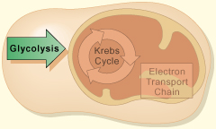

OBJECTIVE: to analyze the steps involved in the process of glycolysis

How many ATP molecules are used to activate glycolysis? How many net ATP molecules are produced? What changes does glucose go through in the process?
When you have finished studying glycolysis, take a closer look at the Krebs cycle on page